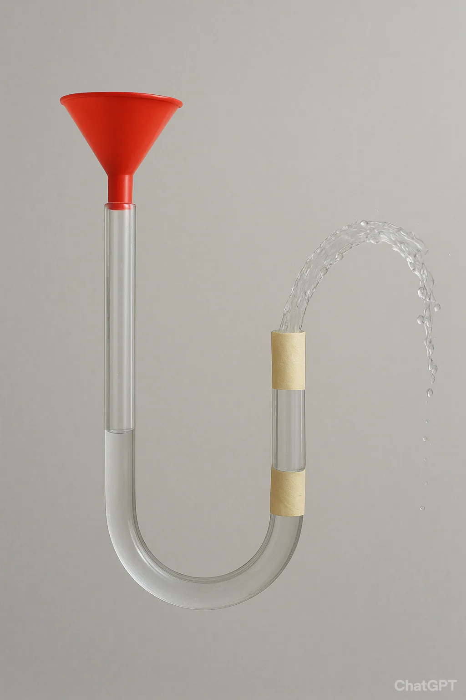
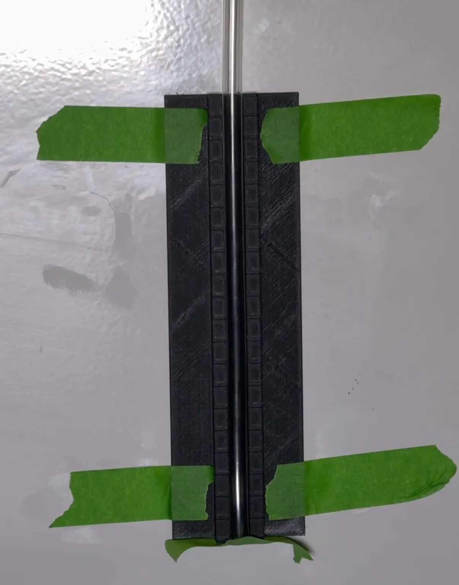
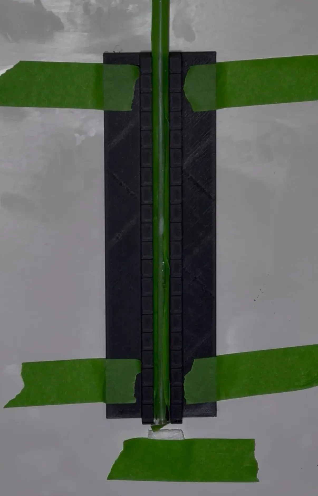
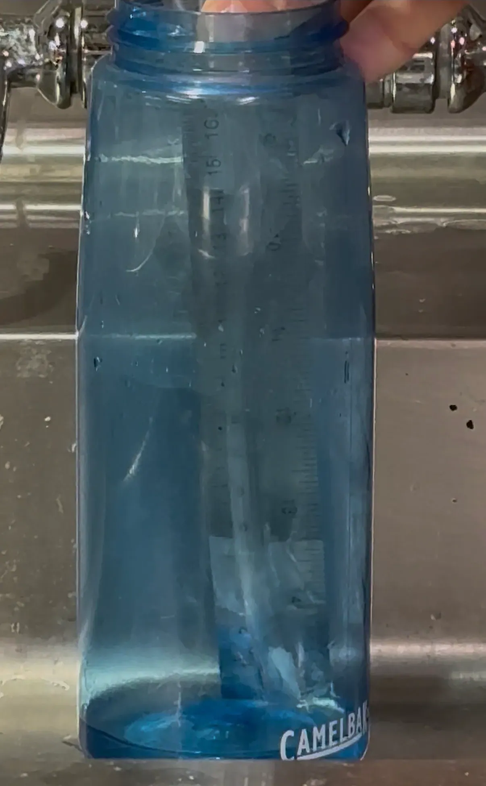
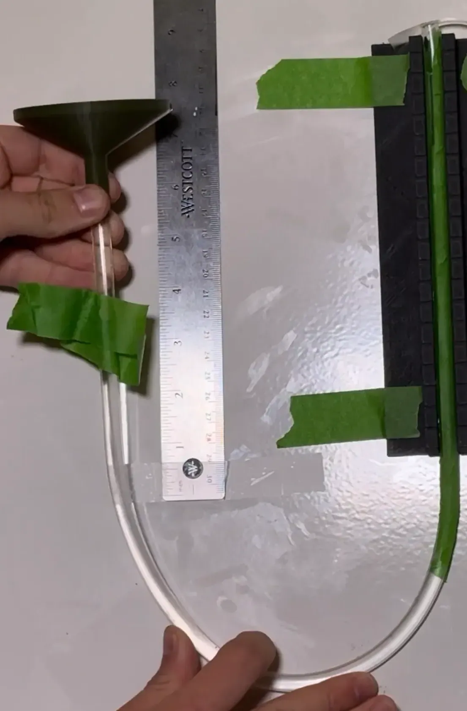
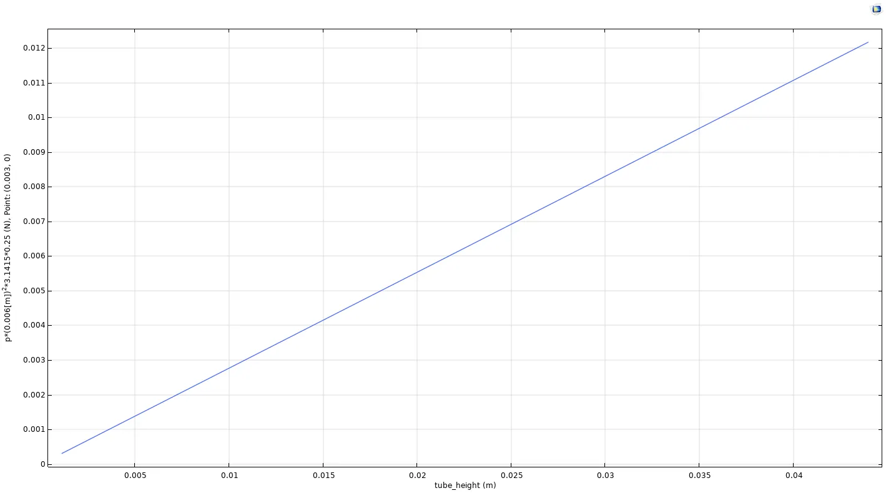

Midterm 1: Just How Sticky Is Tape?

Introduction
We all know tape is sticky, but just how sticky is it?
- More specifically how can fluid mechanics be used to determine how much force the tape can apply on the end of a length of Tygon tubing?
These are questions that have been plaguing ME51 students for countless days. Here is my answer.
Process (Failure #1)
- A new jig to hold the manometer in the desired vertical orientation was designed using OnShape and 3D-printed out of PLA. The jig had 20cm long walls to hold the tubing and included 1 mm horizontal inset lines spaced 9 mm apart to provide a scale for later pixel measurements. They run the entire width of the jig to act as a datum for finding the rates of camera barreling. The funnel I designed for the lab to make pouring liquids into the tubing easier was reused.

- The idea was to slowly pour water into the tubing until the point where the tape couldn’t counteract the hydrostatic force of the column of water. This did not work.
- What I forgot to consider was that the water has to stop, which changes its momentum and that change in momentum applies an force to the tape. Also the I could not manage to pour the water slowly enough to discern the quantity of water pressing on the tape at the point of failure, even using the 8x slow motion on my phone.
Process (Failure #2)

- I thought that the reason I couldn’t tell the height of the water at moment when the it broke through the tubing had to do with the fact the contrast at the water/air barrier was not very distinct against the black PLA background, so I added green tape behind the tubing to help combat this
- I also thought that if I poured slowly enough, I could notice the precise moment when the seal broke by finding the first frame where the paper towel got wet.
- Neither of these changes altered the physics behind the change in momentum that was making the first idea non-functional.
- Pouring slower was also not a feasible option for the current setup between adhesion between the water and the tubing was causing the water to spiral down the tubing rather than traveling straight down. This made knowing the volume of the water sitting on the tape almost impossible.
- Further complicating the physics, I also learned that the tape being attached to the flexible tubing made it so that the impulse from the water was being absorbed partially by the tubing itself rather than singularly the tape causing deflections.
- Due to all of the problems, this concept was scrapped.
Process (Failure #3)

- My next idea was to tape the tubing to a ruler to keep it vertical then taped the two of them to the inside of my water bottle such the taped bottom of the tubing was not touching the bottom of the bottle. The bottle would then be filled up until the hydrostatic pressure pushing up on the tape was enough the break the seal and wet small quantity of paper towel inserted into the tubing.
- Another area of concern was that water was that the painters tape used was water-permeable which made it so that paper towel was getting wet almost immediately after the water raised to the same level as the tape. As such, this is the point where I made the switch to using scotch tape.
- This likely could have worked if I had a large enough container, but because the force was pushing in the same direction as the adhesion so it would have to bend the tape to the point where the adhesion failed. Since I could not locate a larger transparent (or translucent) container for the water, I conceded. I would like to potentially try this setup again in the future though.
Process (Success)

- I took the principles learned from the manometer jigs last lab, and removed it from the U-shaped jig this time to allow for the amount of tubing under the tape to be adjusted. The tubing was already filled with water, and the only movement was due to Bernoulli’s principle, so the impulse of the water stopping was much more easily controlled.
- The tubing was filled to just below the top of the tubing on the right side, then the tape was placed on top. This meant that both sides were experiencing atmospheric pressure. On the right side it was open to the environment of Nolop, where this experiment was preformed and the small quantity of air on the right side minimized the amount that it would compress due to increasing pressures.
- This was the last idea that I have documentation for (admittedly there at least 3 or 4 other half baked ideas before this one that didn’t end up working )
- To increase the water level on the right side, the center and left side were slowly raised. This raised the water level on both sides in tandem, eventually breaking through after being 4.4cm above the height of the tape
Process (Lighting and Photos)
- The Lens Correction setting on iPhone was used to account for barreling and zoom was set to 2.4x at distance of 170cm directly backwards from the center of the “U” shape. This was measured with a comically large carpentry square and marked with an LED work light used in Nolop for projects photos for people’s portfolios.

Physical Phenomena and Calculations
Setting up a Free Body Diagram for the system, since the system is at equilibrium at the instant right before the tape’s seal breaks, we can say that the sum of all the forces in the y direction is zero, and therefore (force of water on other fluid) and (force of tape on the water) are equal.
Since , we can find the force of the water on the tape.
Setting up a direct proportion between the force of the water on the tape and the difference in height on the left and right sides, we get
Results
- The seal broke at an average height difference of 4.4 cm between the left and right side giving:
COMSOL Simulation
After collecting data for the force required to break the seal on the tape, I set up a parametric sweep on COMSOL ranging from (0, 0.044] m with steps of 0.011 m (such that there were 40 unique instances of the parameter calculated and displayed on the plot below).

I could not figure out how to change the axis titles of this plot, but the y-axis is the force on the tape at the center of the cross section and x-axis is difference in height between the two sides. This shows a linear relationship between height of the water and force applied which makes sense since the water is not moving.
Reflection
- What I learned
- How to predict hydrostatic behavior of a water on tape.
- How to measure distances accurately using a camera and estimating the error in these measurements.
- How to find force that water must apply on Scotch tape in order to make it fail.
- What I was most proud of
- I’m honestly just proud this experiment ended up working in the end and that I was able to stick with it until I got to that point.
- What took a while (was tough)
- Finding a setup for the experiment that would actually work consistently, took way longer than I had anticipated (about 5 hours longer). I learned that it is actually rather difficult to limit a system to only having a single force being applied.
- Every time I learn a new feature in COMSOL, I find that it is less intuitive than the last and the lack of a usable search function within the application makes the whole process harder.
- This is only tangentially related to the COMSOL being difficult but the new VM setup is so much better than the old one. Thank you for all of you effort in putting that together.
- Finding the energy and brainpower to work on this has honestly also been difficult. Thank you for the extension.
- Most spectacular failure
- My first idea for the lab was simply unusable and before I had the foresight to tape the paper towel to the wall directly below the tubing, I spilled more water onto the floor than I’d like to admit.
10/2/25 Tommy Giglia
Originally written in Notion.